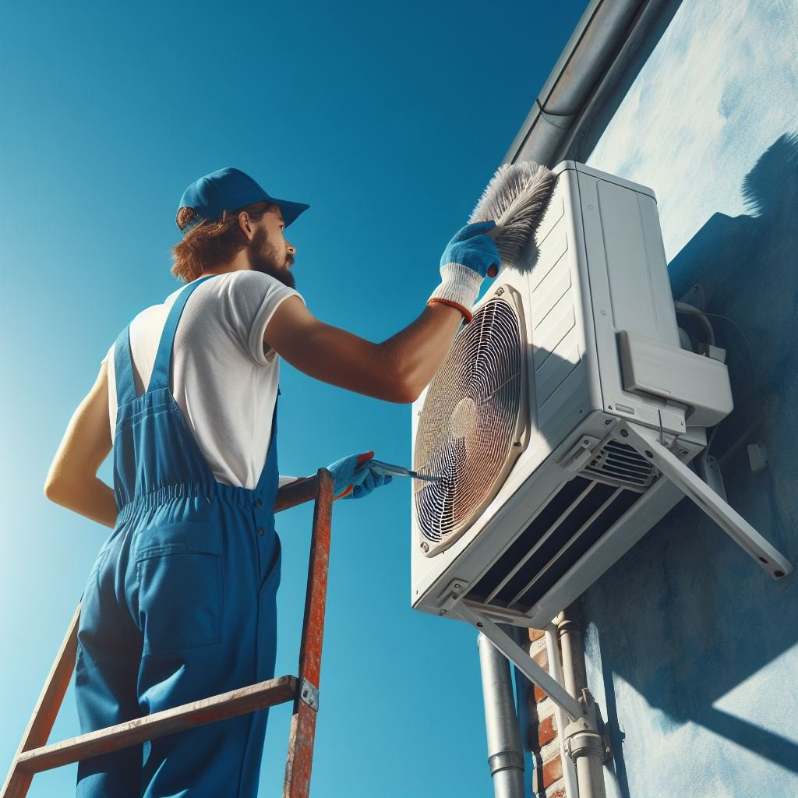
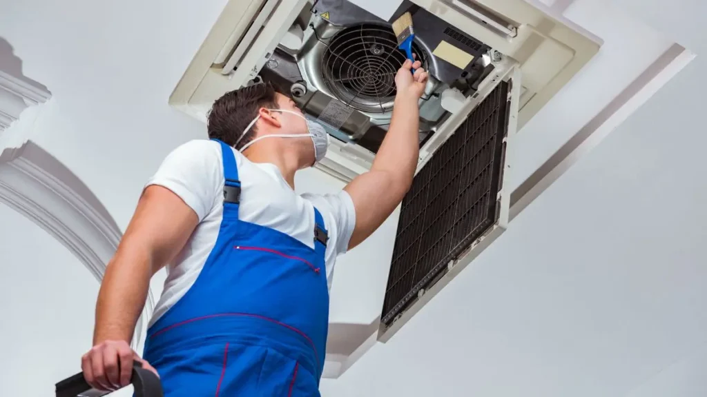
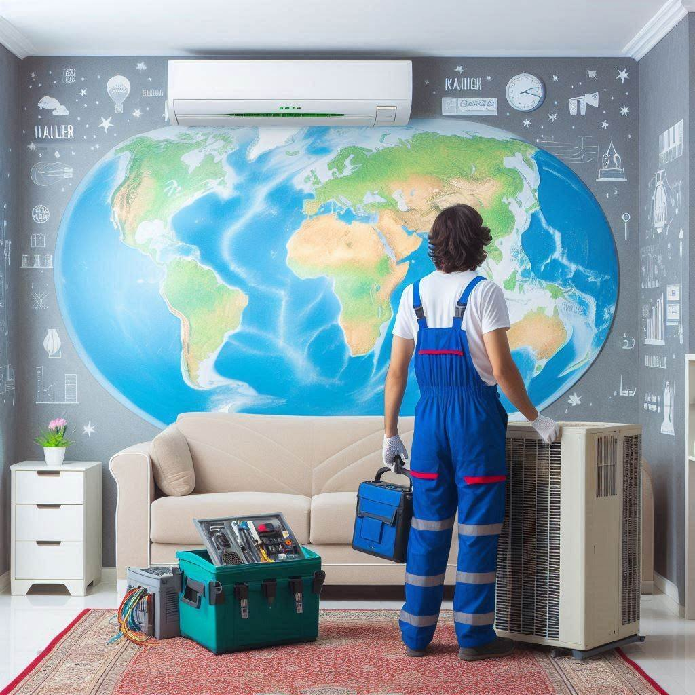

شركه صيانه و تنظيف مكيفات بالرياض
شركه صيانه و تنظيف مكيفات بالرياض
تعد المكيفات من الأجهزة الضرورية في كل منزل ومكتب، خاصة في الأجواء الحارة مثل الرياض. لضمان عمل المكيف بكفاءة عالية وتوفير بيئة صحية، فإن تنظيف مكيفات بشكل منتظم هو أمر لا غنى عنه. سنستعرض أهمية تنظيف المكيفات والخدمات المتميزة التي تقدمها شركة “نقل الرياض”، مع التركيز على تفاصيل كل نوع من المكيفات وأجزاءها.
تُعتبر المكيفات من أهم الأجهزة المنزلية، خاصة في المدن الحارة مثل الرياض، حيث تعتمد العائلات والشركات بشكل كبير على المكيفات للحفاظ على درجات حرارة مناسبة. ومع ذلك، فإن المكيفات تحتاج إلى صيانة دورية لضمان عملها بكفاءة، وتجنب تراكم الأتربة والجراثيم داخلها. وهنا يأتي دور خدمات تنظيف مكيفات التي تقدمها شركة “نقل الرياض”، المتخصصة في هذا المجال.
اتصل بنا الان
ارخص شركة تنظيف مكيفات بالرياض
تبحث العائلات والشركات على حد سواء عن حلول فعالة وموفرة من حيث التكلفة للعناية بالمكيفات. إذا كنت تبحث عن تنظيف مكيفات بأعلى جودة وبأسعار تنافسية، فإن شركة “نقل الرياض” تُعد الخيار الأمثل. تقدم الشركة خدمات تنظيف شاملة تغطي جميع أنواع المكيفات، بما في ذلك المكيفات السبليت والمركزية، بأسعار مناسبة تلبي احتياجات مختلف الفئات.
ما يجعل شركة “نقل الرياض” الخيار الأرخص هو اعتمادها على فريق عمل مدرب ومعدات متقدمة تساعد في تنظيف المكيفات بفعالية عالية وفي وقت قصير. وهذا يعني أنك لن تضطر إلى دفع تكاليف إضافية نتيجة أعطال أو صيانة متكررة بسبب تراكم الأتربة.

نقل عفش
لماذا تختار نقل الرياض لتنظيف المكيفات؟
شركة “نقل الرياض” تتميز بخبرتها الواسعة وسمعتها الممتازة في تقديم خدمات تنظيف المكيفات بمختلف أنواعها. بفضل استخدام الأدوات المتطورة والفريق المدرب، تضمن الشركة تقديم خدمات تنظيف مكيفات شاملة تلبي احتياجات العملاء بأعلى مستويات الجودة.
بالإضافة إلى ذلك، تقدم شركة “نقل الرياض” أسعارًا تنافسية تناسب مختلف الميزانيات، مع ضمان الالتزام بالمواعيد وتوفير تجربة خالية من المتاعب. سواء كنت بحاجة إلى تنظيف مكيف سبليت، غسيل مكيفات مركزية، أو أي نوع آخر من الخدمات، يمكنك الاعتماد على “نقل الرياض” للحصول على أفضل النتائج.

تنظيف ميكفات
غسيل مكيفات بالرياض
عملية غسيل المكيفات تعد الخطوة الأولى في الحفاظ على كفاءة التبريد وضمان صحة الهواء المنبعث. تتضمن هذه العملية إزالة الأتربة والغبار المتراكم على المكونات الداخلية والخارجية. شركة “نقل الرياض” تعتمد على فريق من الخبراء لتقديم خدمة غسيل شاملة، باستخدام أدوات وتقنيات حديثة تضمن عدم إتلاف المكيف أثناء التنظيف.
غسيل المكيفات لا يقتصر فقط على تحسين الأداء، بل يقلل أيضًا من استهلاك الكهرباء، حيث يساعد على تحسين كفاءة المروحة وضاغط الهواء. تنظيف المكيفات بطريقة منتظمة يجعلها تعمل بسلاسة ويطيل من عمرها الافتراضي.

فك و تركيب مكيفات سبليت
غسيل مكيفات سبليت
مكيفات السبليت هي خيار شائع في المنازل والمكاتب بسبب كفاءتها العالية وتصميمها الأنيق. ومع ذلك، تحتاج هذه المكيفات إلى عناية خاصة للحفاظ على أدائها. توفر شركة “نقل الرياض” خدمات تنظيف مكيفات سبليت باحترافية عالية، حيث يتم التركيز على تنظيف المروحة والفلاتر والزعانف لضمان تدفق هواء نقي وخالٍ من الشوائب.
يشمل تنظيف مكيفات السبليت إزالة الرواسب والبكتيريا التي قد تتجمع مع مرور الوقت، مما يساعد على تقليل فرص الإصابة بأمراض الجهاز التنفسي. بفضل الأدوات المتقدمة التي تستخدمها شركة “نقل الرياض”، يمكنك التأكد من أن المكيف الخاص بك سيعمل بكفاءة وكأنه جديد.

افضل شركه تنظيف مكيفات بالرياض
شركه تنظيف مكيفات
عندما يتعلق الأمر بتنظيف المكيفات، فإن اختيار شركة موثوقة هو خطوة أساسية. شركة “نقل الرياض” تعتبر من أفضل الخيارات المتاحة في الرياض، حيث تقدم خدمات تنظيف شاملة لكل أنواع المكيفات. تعتمد الشركة على فريق من الفنيين ذوي الخبرة، الذين يتمتعون بالمهارات اللازمة للتعامل مع المكيفات بمختلف أحجامها وأنواعها.
شركة “نقل الرياض” تستخدم مواد تنظيف آمنة وفعالة تزيل الأتربة والبكتيريا دون التأثير على البيئة. إلى جانب ذلك، توفر الشركة حلولًا مخصصة تناسب احتياجات كل عميل، مما يجعلها الخيار الأمثل للحصول على خدمة تنظيف مكيفات متكاملة وموثوقة.
المكيفات المركزية تعتبر من الأنظمة الكبرى التي تحتاج إلى عناية دورية للحفاظ على أدائها. غسيل مكيفات مركزية يتطلب خبرة واسعة وتجهيزات خاصة، وهو ما توفره شركة “نقل الرياض” بشكل احترافي. تشمل هذه الخدمة تنظيف كافة مكونات النظام، مثل الوحدات الداخلية والخارجية، الأنابيب، والمروحة.
تنظيف مكيفات مركزية بانتظام يضمن توزيع هواء نقي في جميع أرجاء المكان، مما يعزز الراحة ويقلل من تراكم الغبار والرواسب داخل القنوات. تقدم شركة “نقل الرياض” حلولاً مخصصة تناسب احتياجات المنشآت الكبيرة مثل المكاتب والفنادق، مع ضمان تقديم الخدمة بأعلى مستويات الجودة.
تنظيف مكيفات السبليت يحتاج إلى دقة وعناية فائقة، حيث أن هذه الأنواع تحتوي على مكونات حساسة قد تتأثر بأي عملية تنظيف خاطئة. تركز شركة “نقل الرياض” على استخدام تقنيات متطورة لضمان تنظيف مكيف سبليت بطريقة تضمن حماية المكونات وتحسين الأداء.
تبدأ عملية تنظيف مكيف سبليت بتفكيك الوحدة الداخلية وتنظيف الفلاتر والزجاجات، بالإضافة إلى تطهير المبخر والمروحة. ثم يتم تنظيف الوحدة الخارجية لضمان إزالة الأتربة والأوساخ التي قد تعيق تدفق الهواء. بفضل هذه العملية الدقيقة، يتم تحسين كفاءة التبريد وتقليل استهلاك الكهرباء.
الوحدة الداخلية للمكيف هي المسؤولة عن توزيع الهواء النقي داخل الغرف، لكنها عرضة لتراكم الأتربة والغبار بسبب الاستخدام المستمر. تنظيف الوحدة الداخلية من الخدمات الأساسية التي تقدمها شركة “نقل الرياض” ضمن خدمات تنظيف مكيفات.
تشمل عملية التنظيف إزالة الفلاتر وغسلها بماء فاتر، تنظيف المبخر باستخدام منظفات مخصصة، وإزالة أي شوائب داخلية تؤثر على تدفق الهواء. كما يتم استخدام أدوات متطورة لضمان تنظيف عميق دون الإضرار بالمكونات الحساسة للوحدة.
تنظيف الوحدة الداخلية يحسن جودة الهواء، مما يساعد على خلق بيئة صحية داخل المنزل أو المكتب، خاصة للأشخاص الذين يعانون من الحساسية أو مشكلات الجهاز التنفسي.
الوحدة الخارجية للمكيف هي الجزء الذي يتعرض للعوامل البيئية المباشرة، مثل الأتربة وأشعة الشمس والرطوبة. لضمان أداء المكيف بكفاءة عالية، يجب تنظيف الوحدة الخارجية بانتظام. تقدم شركة “نقل الرياض” خدمة تنظيف متخصصة للوحدات الخارجية، حيث يتم إزالة الغبار والرواسب التي تتراكم على المروحة والزجاجات.
تشمل عملية تنظيف الوحدة الخارجية استخدام مواد تنظيف آمنة تزيل الشوائب دون الإضرار بالمكونات المعدنية. يتم أيضًا التحقق من حالة الأنابيب والمكثفات للتأكد من عدم وجود أي تسريبات أو تلفيات. تنظيف الوحدة الخارجية يساهم في تحسين كفاءة التبريد وتقليل استهلاك الطاقة.
لماذا نحن؟
تنظيف مكيفات ليس مجرد خدمة إضافية، بل هو ضرورة للحفاظ على كفاءة الجهاز وجودة الهواء في المكان. شركة “نقل الرياض” تقدم حلولاً شاملة تناسب جميع أنواع المكيفات، من السبليت إلى المركزية، مع التركيز على تنظيف كل جزء من المكيف بعناية واحترافية. إذا كنت تبحث عن خدمات تنظيف مكيفات موثوقة وفعالة، فإن “نقل الرياض” هي الخيار الأمثل لضمان تجربة مريحة ونتائج مميزة.
Faq
افضل شركة تنظيف مكيفات بالرياض
إلى جانب كونها الأرخص، تُعتبر شركة “نقل الرياض” أيضًا افضل شركة تنظيف مكيفات بالرياض. السبب الرئيسي وراء ذلك هو التزامها بتقديم خدمات متكاملة تضمن تنظيفًا دقيقًا لجميع أجزاء المكيف، سواء الداخلية أو الخارجية.
توفر الشركة خدمات تعتمد على تقنيات حديثة تساعد في إزالة جميع الشوائب والجراثيم من المكيفات، مما يضمن بيئة نظيفة وصحية. كما تلتزم “نقل الرياض” باستخدام مواد تنظيف آمنة وصديقة للبيئة، مما يجعلها الخيار الأفضل للأسر التي تهتم بصحة أفرادها.
فك وتركيب مكيفات سبليت
شركة نقل الرياض هي الوجهة المثالية لكل من يبحث عن خدمات صيانة مكيفات شمال الرياض بمستوى احترافي يضمن الأداء الأمثل للمكيفات طوال العام.بفضل فريق من المهندسين والفنيين المتخصصين تقدم الشركة حلول متكاملة تشمل الفحص الدقيق والصيانة الدورية وإصلاح الأعطال المعقدة باستخدام أحدث التقنيات.تعتمد الشركة على أساليب متطورة في تنظيف مكيفات شمال الرياض لضمان إزالة الشوائب المتراكمة وتحسين كفاءة التبريد مما يسهم في تقليل استهلاك الطاقة وإطالة عمر المكيف ويتم استخدام مواد تنظيف صديقة للبيئة تضمن أداء فعال دون الإضرار بمكونات الجهاز الداخلية.سواء كنت بحاجة إلى صيانة تكييف مركزي أو وحدات منفصلة توفر نقل الرياض خدمات مصممة خصيصًا لتناسب متطلبات العملاء مع ضمان سرعة الاستجابة والالتزام بالمعايير الهندسية العالية.تعتمد الشركة على خبرتها العميقة لتشخيص المشكلات بدقة وتنفيذ الحلول الفعالة التي تحافظ على راحة المستخدمين مما يجعلها الاختيار الأول لمن يسعى للحصول على بيئة داخلية مثالية.للتواصل مع شركة نقل الرياض عبر 0541145506 ويمكنك مراسلتنا عبر الواتساب من خلال هذا الرابط.
نقل الرياض أفضل شركة صيانة مكيفات شمال الرياض
تعد شركة نقل الرياض الخيار الأمثل لمن يبحث عن خدمات صيانة مكيفات شمال الرياض بمستوى احترافي يعكس التميز والدقة في كل التفاصيل.بفضل كادرها الفني المدرب وأحدث الأدوات والمعدات وتقدم الشركة حلول مناسبة لضمان عمل أنظمة التكييف بكفاءة عالية مما يحقق أقصى درجات الراحة والاستدامة.
خدمات صيانة متطورة بأعلى معايير الجودة
الاعتماد على الصيانة الدورية للمكيفات ليس رفاهية بل ضرورة لضمان الأداء الأمثل وتقليل الأعطال المفاجئة.
تقدم نقل الرياض خدمات صيانة شاملة تشمل الفحص الدقيق وضبط مستوى الفريون وإصلاح الدوائر الكهربائية واستبدال الأجزاء التالفة ويتم تنفيذ جميع العمليات وفق معايير عالمية تضمن استعادة التكييف لكفاءته التشغيلية بأسرع وقت ممكن.
تنظيف مكيفات شمال الرياض بطرق حديثة
لا يقتصر دور المكيف على التبريد فحسب بل يؤثر بشكل مباشر على جودة الهواء داخل المنازل والمكاتب لذلك تقدم الشركة خدمات تنظيف مكيفات شمال الرياض باستخدام تقنيات متقدمة تزيل الغبار والعفن والبكتيريا المتراكمة داخل الفلاتر والمكونات الداخلية.
لماذا نقل الرياض هي الأفضل؟
-
فريق متخصص: يمتلك خبرة واسعة في صيانة مختلف أنواع المكيفات سواء كانت سبليت أو مركزية أو شباكية.
-
سرعة الاستجابة: توفر خدمة الطوارئ لضمان إصلاح الأعطال في أسرع وقت ممكن.
-
أسعار تنافسية: توازن بين الجودة العالية والتكلفة المناسبة.
-
تقنيات متقدمة: تعتمد أحدث الأدوات لضمان دقة العمل وإطالة عمر المكيف.
مع ارتفاع درجات الحرارة في الرياض تصبح الصيانة الدورية والتظيف العميق للمكيفات أمرًا لا غنى عنه وتوفر نقل الرياض حلولًا متكاملة تضمن تشغيل سلس وموثوق لأنظمة التكييف مما يجعلها الاختيار الأول لكل من يبحث عن الاحترافية والموثوقية.
شركة تنظيف مكيفات شمال الرياض
-
تلعب أنظمة التكييف دور جوهري في تحسين جودة الحياة لكن مع تراكم الغبار والأتربة والبكتيريا داخل المكيفات قد تتحول من مصدر للراحة إلى مسبب لمشكلات صحية عديدة.تقدم شركة نقل الرياض خدمات تنظيف مكيفات شمال الرياض بأساليب متطورة تضمن استعادة كفاءة المكيف وتحسين جودة الهواء الداخلي.إهمال تنظيف المكيفات يؤدي إلى انخفاض كفاءتها وزيادة استهلاك الطاقة حيث تتراكم الأتربة داخل الفلاتر والمبخر مما يعوق تدفق الهواء البارد ويجبر الجهاز على العمل بطاقة مضاعفة بالإضافة إلى ذلك تتكاثر البكتيريا والعفن داخل المكيف مما يؤثر سلبًا على صحة الأفراد.خاصة لمن يعانون من الحساسية أو مشاكل الجهاز التنفسي وتعتمد نقل الرياض على أحدث المعدات والتقنيات لضمان تنظيف شامل وعميق لجميع أجزاء المكيف حيث تشمل الخدمات تفكيك وغسل الفلاتر لإزالة الغبار والشوائب العالقة وتنظيف المبخر والمكثف باستخدام تقنيات البخار أو المواد الكيميائية الآمنة. للقضاء على البكتيريا والعفن إلى جانب تنظيف وصيانة مجاري الهواء للتأكد من عدم تراكم الأوساخ التي قد تسبب الروائح الكريهة أو انسداد التهوية كما يتم إعادة تعبئة غاز الفريون عند الحاجة لضمان التبريد الفعّال بعد تنظيف الأجزاء الداخلية.بالإضافة إلى التنظيف الاحترافي توفر الشركة خدمات صيانة مكيفات شمال الرياض لضمان استمرار عمل الأجهزة بكفاءة مثالية حيث يساعد الفحص الدوري في اكتشاف الأعطال المحتملة وإصلاحها قبل أن تتفاقم مما يطيل عمر المكيف ويوفر تكاليف الإصلاح المستقبلية.تتميز خدمات نقل الرياض بالاحترافية العالية حيث يعمل فريق متخصص على تنفيذ عمليات التنظيف باستخدام أحدث المعدات والمواد الآمنة لضمان أمان وصحة المستخدمين كما أن الشركة تقدم أسعار تنافسية تجمع بين الجودة العالية والتكلفة المعقولة.مع سرعة استجابة تلبي احتياجات العملاء في أسرع وقت ممكن ومع حلول فصل الصيف وارتفاع درجات الحرارة يصبح تنظيف المكيفات أمر ضروري للحفاظ على كفاءة التبريد وجودة الهواء الداخلي لذلك توفر نقل الرياض الحلول المثالية لكل من يبحث عن خدمات احترافية تضمن الراحة والصحة في وقت واحد.
كيف تتم عملية الصيانة والتنظيف داخل شركة نقل الرياض؟
-
تتم عملية الصيانة والتنظيف داخل شركة نقل الرياض وفق منهجية دقيقة تضمن إعادة المكيفات إلى أعلى مستويات الكفاءة التشغيلية.تبدأ العملية بإجراء فحص شامل لتقييم حالة المكيف حيث يعتمد الفنيون على أجهزة قياس متطورة لتحليل أداء التبريد ومستوى تدفق الهواء وضغط غاز الفريون هذه المرحلة تتيح تحديد المشكلات المحتملة ووضع خطة عمل مخصصة لكل وحدة تكييف.من ثم يتم تنفيذ أعمال صيانة مكيفات شمال الرياض وفق معايير هندسية دقيقة تشمل إصلاح الأعطال الكهربائية وضبط مستويات الفريون واستبدال الأجزاء التالفة لضمان تشغيل سلس وطويل الأمد.أما في جانب تنظيف مكيفات شمال الرياض فتُطبق تقنيات متقدمة تضمن إزالة الشوائب المتراكمة داخل الجهاز دون التسبب بأي ضرر للمكونات الحساسة ويبدأ التنظيف بفك الأجزاء القابلة للإزالة مثل الفلاتر وشبكات التهوية ليتم غسلها باستخدام منظفات متخصصة تزيل الغبار والبكتيريا بفعالية.كما يتم تنظيف ملفات التبريد والمبخر باستخدام تقنية البخار أو مواد مذيبة تذيب الترسبات العالقة دون التأثير على أداء المكيف وتتضمن العملية أيضًا تنظيف مجاري الهواء وإزالة العوالق التي قد تؤثر على جودة الهواء الداخلي مما يسهم في تحسين الأداء العام للمكيف وتقليل استهلاك الطاقة.
صيانة التكييفات بكفاءة عالية
- خلال عملية الصيانة يُجرى فحص شامل للدارات الكهربائية للتأكد من عدم وجود تآكل أو تلف في الأسلاك والموصلات حيث يتم استبدال أي جزء متضرر لضمان عمل المكيف بكفاءة مثالية كما يتم التحقق من كفاءة المروحة الداخلية وضبط توازنها لضمان توزيع الهواء بشكل متساوي داخل المساحة المراد تبريدها. في حال رصد أي أعطال في الضاغط أو الدوائر الإلكترونية يتم إصلاحها باستخدام معدات عالية الدقة تضمن استعادة المكيف لأفضل أداء ممكن.بعد استكمال جميع مراحل الصيانة والتنظيف يتم إجراء اختبار تشغيل نهائي لضمان استعادة المكيف لكفاءته القصوى ويُقاس معدل تدفق الهواء ودرجة التبريد ويتم التحقق من خلو الجهاز من أي أصوات غير طبيعية أو اهتزازات غير مرغوبة.كما يتم تقديم إرشادات للعملاء حول كيفية الحفاظ على نظافة المكيف وإجراء الصيانة الدورية بأنفسهم لتجنب الأعطال المستقبلية.تتميز عملية صيانة مكيفات شمال الرياض وتنظيف مكيفات شمال الرياض داخل شركة نقل الرياض بالدقة والاحترافية حيث يتم تنفيذ كل خطوة وفقًا لأحدث التقنيات والمعايير العالمية مما يضمن أداء فائق للمكيفات وعمر أطول لها إلى جانب توفير بيئة داخلية نظيفة وصحية تلبي أعلى معايير الراحة والرفاهية. للتواصل مع شركة نقل الرياض عبر 0541145506 ويمكنك مراسلتنا عبر الواتساب من خلال هذا الرابط.
- فك وتركيب مكيفات سبليت
- فك وتركيب مكيفات
- تنظيف مكيفات بالرياض
- صيانه مكيفات اسبليت
- صيانه جميع انواع المكيفات
- افضل شركه فك وتركيب مكيفات بالرياض
- صيانه مكيفات
- تنظيف مكيفات
- فك و تركيب مكيفات
تواصل معنا الان
فريق خدمه عملاء شركه نقل الرياض فى انتظار تواصلكم معنا
تواصل معنا الان